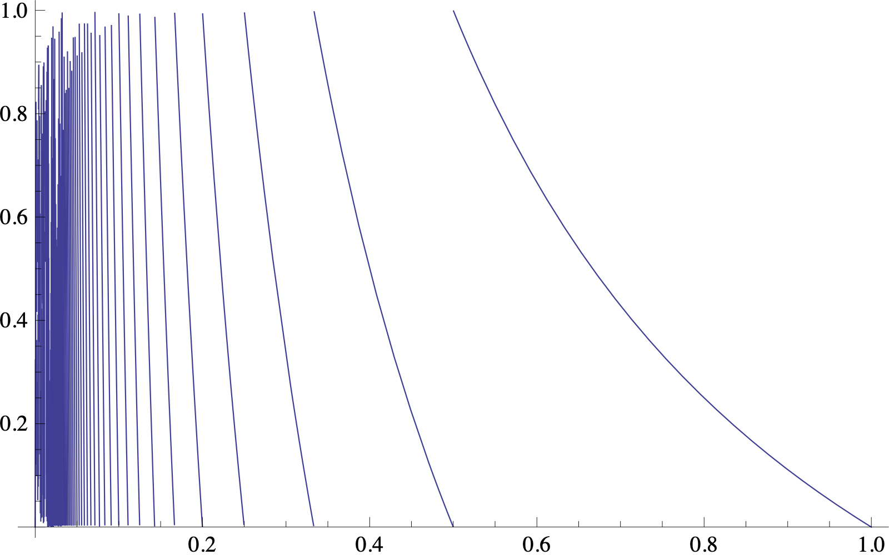

A discrete-time system is called one-dimensional if it has either $\mathbb{R}$ or a sub-interval of $\mathbb{R}$ as its state space. There are many interesting examples of such systems, and it will be especially convenient to focus on maps defined on an interval, usually taken to be the unit interval $[0,1]$ (or in some cases the open interval $(0,1)$). Such a map is called an interval map. The logistic map is one especially interesting example of an interval map. Here are some additional maps that we will consider later.
Doubling mapThe doubling map $D:[0,1)\to[0,1)$ is defined by
(see Figure 10). As we will see later, it is closely related to binary expansions of real numbers in $(0,1)$. In particular, trying to understand the statistical properties of binary expansions of random numbers leads naturally to questions about properties of the doubling map --- see Section 2.10 for further discussion.
Circle rotation mapFor $0<\alpha<1$, the circle rotation map $R_\alpha:[0,1)\to[0,1)$ is defined by
The reason for the name of this map is that if one considers the interval $[0,1]$ as a topological circle by identifying the two ends, the map corresponds to a rotation of the circle by the angle $2\pi \alpha$.
Tent mapThe tent maps are another one-parameter family of maps $\Lambda_a$, $0<a\le 2$, defined by
Figure 10 illustrates the extreme case $a=2$.
Gauss mapDenote by $\{ x \}=x-\lfloor x\rfloor$ the fractional part of a real number $x$ (where $\lfloor x\rfloor = \max\{ n\in\mathbb{Z}\,:\,n\le x\}$ is the integer part of $x$). The Gauss map $G:(0,1)\to[0,1)$, which is related to so-called continued fraction expansions of real numbers, is defined by
i.e., $G(x)=1/x-n$ for $1/(n+1)<x<1/n$, ($n=1,2,\ldots$).
Show (or read in a number theory textbook how to show) that the numbers $x\in [0,1]$ for which the sequence of iterates $G^n(x)$ eventually reaches $0$ (and is therefore undefined for larger values of $n$) are precisely the rational numbers.
Show that the eventually periodic points of $G$ (numbers $x$ for which for some $n$, $G^n(x)$ belongs to an $m$-cycle, see the definition below) are the quadratic irrationals, i.e., the irrational numbers which are solutions of quadratic equations.
Find a formula for all the fixed points of $G$.

(d)